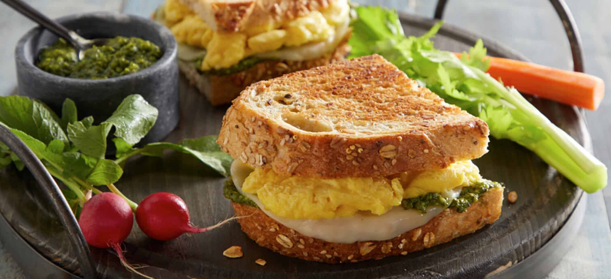

Pesto and Egg Grilled Cheese Sandwich

Light and airy scrambled eggs are layered
with creamy provolone cheese and flavorful
pesto for a quick and substantial sandwich
that will redefine what it means to be grilled cheese.
Ingredients
- 2 tsp Olive Oil
- 2 large Beaten Eggs
- 2 slices Whole Grain Bread
- 1 tbsp Basil Pesto
- 1 slice Provolone cheese
Steps
- In a medium non-stick skillet,
heat olive oil over medium heat
- Pour eggs into hot skillet and gently
pull the eggs across the pan using a spatula
- Cook until large soft curds occur,
and no liquid remains. Set aside.
- Spread ½ tablespoon pesto on one side of each slice of bread
- In the same skillet over medium heat, place 1 slice, plain side down,
of bread in the skillet and top with provolone and scrambled eggs
- inish with the other slice of bread.
- Cook 3-5 minutes on each side until golden and cheese is melted